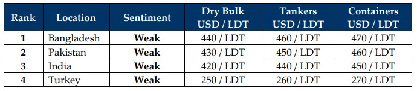

inWeekly Demolition Reports23/06/2025

The world watched in disbelief as the U.S. carried out a major attack on 3 Iranian nuclear sites and while claiming destruction of the facilitiesdespite awaiting BDA (Battle Damage Assessment), early indications seem to suggest that the primary facility may still be intact. And while this strike was conducted over the weekend, the tension surrounding the possibility of an attack saw the BDI (Baltic Exchange Dry Index) fall a massive 3.5% down to its lowest level seen over the last 2 weeks, erasing a majority of recent gains as Friday closed. Leading the race was the Capesize index that fell nearly 6.5% across the week while the Panamax index fell 0.2% during the same time. The price of oil, which will also be a key item to keep an eye out for next week especially as the Iranian government votes to shut down the Gulf of Hormuz effectively terminating Iranian oil exports, had already fallen about 0.2% (seems to be a theme here) to end the week at USD 73.80/barrel. Global markets immediately started reacting post-strikes as the U.S. Dollar, having ended Friday overall stronger than most recycling nation currencies, saw the “Weekend at Bernie’s” volatility push the U.S. Dollar all over the currency board. Local steel plate prices also continued along the same trajectory as recent weeks i.e. down in some while laying on the beach in others.
And while these seismic shifts are not without reverberations that have already been felt all over the Indian sub-continent ship recycling sector, the upcoming enforcement of the HKC exacted a self-imposed, yet much-needed set of restrictions to ensure that the business of recycling endures at key locations. Price declines that started recently will also continue across an already creaky Indian sub-continent ship recycling sector, which itself is going through a tonnage drought on the back of recently firming freight rates despite recycling markets suffering through one of the worst supplies of recycling tonnage in 2024 in over a decade, all while global ship recyclers were bracing (hoping?) for a healthy inflow of vessels in 2025. Much of this backlogged tonnage is still expected to come for recycling as owners have delayed the sale of some really overaged units as these vessels continue to earn decent rates amidst disastrous geopolitical events that continue to strike the global economy and keep freight markets, more than buoyant.
As tonnage remains absent from the bidding tables, for anxious ship recyclers, Trump’s incessant hopscotching over tariffs and changing trade policies now blended with a fresh new conflict in the Middle East will make it difficult to predict which way the winds will blow (where currencies and local steel plate prices are concerned) and just where subsequent offers will end – tea leaves anyone? One thing seems certain, as regulatory requirements stand to kick in as the HKC is due to finally come into force next week amidst requisite yard upgrades being fully underway in Bangladesh and some report of works beginning even in Pakistan, the convention stands to make significant improvements to a much-maligned industry and firmly places it in line with a global set of approved environmental and operational standards. To follow further developments, please join us for an in-depth discussion of the Hong Kong Convention and its ramifications on ship recycling with our dedicated webinar series on Junte 25th and June 26th.
On a closing thought, will the closing of the Straits of Hormuz open the proverbial “tap” of tonnage for the recycling markets as oil prices and global volatility surges? Tanker tonnage anyone?
For Week 25 of 2025, GMS Market Rankings / vessel indications are as below.

📄 Download PDF: Ship-recycling-market-insight-Week-25-06-20-2025-Landmark-Week...Ahead_.pdfSource: GMS,Inc.https://www.gmsinc.net/gms_new/index.php/web